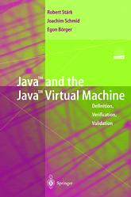

|  |
Java and the Java Virtual Machine
— Definition, Verification, Validation The book provides a high-level description, together with a mathematical and an experimental analysis, of Java and of the Java Virtual Machine (JVM), including a standard compiler of Java programs to JVM code and the security critical bytecode verifier component of the JVM. The description is structured into language layers and machine components. It comes with a natural executable refinement (written in AsmGofer and provided on CD-ROM) which can be used for testing code. The method developed for this purpose, using Abstract State Machines (ASMs), can be applied to other virtual machines and to other programming languages as well. The Jbook gives the most comprehensive and consistent formal account of the combination of Java and the JVM. (Pieter Hartel and Luc Moreau in Formalizing the Safety of Java, the Java Virtual Machine and Java Card, ACM Computing Surveys, 33(4):517-558, 2001. Section 6.2, page 540.) The target readers are practitioners—programmers, implementors, standardizers, lecturers, students—who need for their work a complete, and at the same time transparent definition, and an executable model, of the language, and of the virtual machine underlying its intended implementation. |
| R.Staerk | (Theoretische Informatik, ETH Zürich) |
| J.Schmid | (Siemens Corporate Technology, Munich) |
| E. Börger | (Dipartimento di Informatica Università di Pisa) |
The book can be ordered from Springer (Germany), Springer (New York), Amazon (United States), Amazon (Germany), Amazon (United Kingdom), Barnes & Nobles (USA).
Under explicitly stated conditions, any well-formed and well-typed Java program, when correctly compiled, passes the verifier and is executed on the JVM. It executes without violating any run-time checks, and is correct with respect to the expected behavior as defined by the Java machine.
The proof for this fundamental property uses several other theorems. Some of them are described on this page.
Course Java and the JVM: Definition and Verification at ETH Zürich by Robert Stärk.
Survey Lecture on Modeling and Analysis of Java (PowerPoint animation SurveyJava.ppt) by Egon Börger.
Survey Lecture on Modeling and Analysis of JVM (PowerPoint animation SurveyJVM.ppt) by Egon Börger.
If you like the book, you are welcome to submit your own teaching or other material (slides, exercises, etc.) on the book as addition to this site.
Microsoft Windows is registered trademark of Microsoft Corporation in the United States and/or other countries.
| ETH Home | July 2001 Responsible |
 |